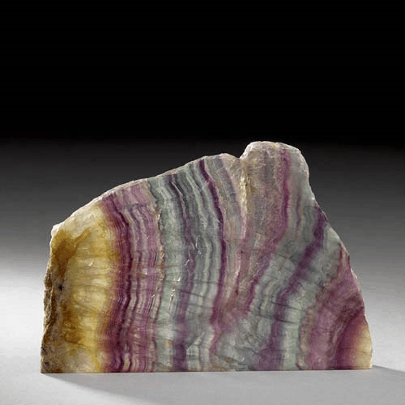
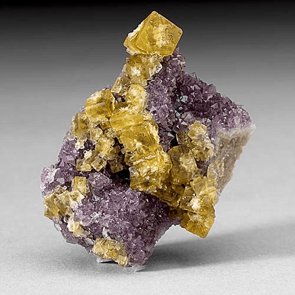
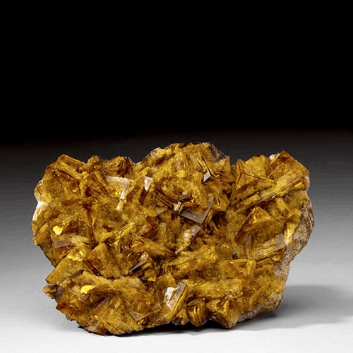

Fluorite - CaF2
Halides




Habit: Cubes, octahedral, rarely dodecahedra, many other forms possible, such as nodular, botryoidal, massive; columnar, granular or fibrous rare.
Environment: An accessory mineral in Granite, granitic Pegmatites and syenites; uncommon as a late Hydrothermal product in cavities and joints in Granite. In carbonatites and alkaline intrusives.
Etymology: From the Latin to flow, in allusion to its low melting point.
Fluorite is used as a flux in the manufacture of steel, in the production of hydrofluoric acid and is used in the manufacture of opalescent glass, enamels and cooking utensils